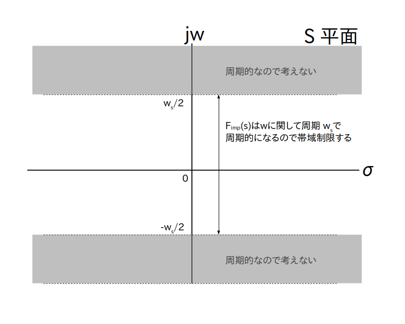
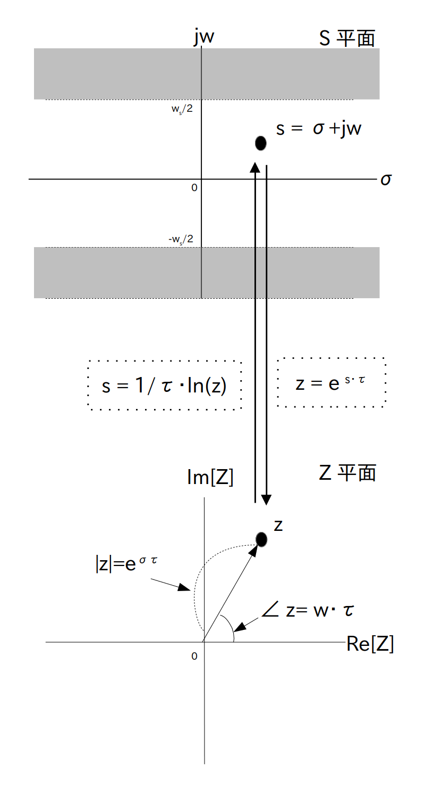

前のページでは Z 変換はラプラス変換のディジタル信号版と書きましたが、より正確に言えば
両側 Z 変換は両側ラプラス変換のディジタル信号版
に相当します。
ここでは両側 Z 変換と両側ラプラス変換の関係について話します。
これらの関係を相関図にして示したのが図1です。
では図1に示した関係について、経路別に説明していきます。
なお大本となるアナログ信号 $f(t)$ は「非周期的」であるとします。
まずは大本となる非周期的なアナログ信号 $f(t)$ をサンプリングしないと何も話が進まないので、$f(t)$ にくし型関数をかけてインパルス列 $f_{imp}(t)$ を作り出します。
$f(t)$ を非周期的な時間領域のアナログ信号とする。
またサンプリング間隔を $\tau$ [秒]、サンプリング角周波数を $w_s = 2\pi/\tau$ [rad/秒] とした くし型関数
※ comb はくしの英文です。
を定義する。
ここで $\delta(t)$ はデルタ関数である。
この時、$f(t)$ にくし型関数 $\textrm{comb}(t)$ をかけて作った信号
\begin{align*} f_{imp}(t) &= f(t) \cdot \textrm{comb}(t) \\[10pt] &= f(t) \cdot \sum_{i=-\infty}^{\infty} \delta(t - i \cdot \tau ) \\[10pt] &= \sum_{i=-\infty}^{\infty} f( i \cdot \tau ) \cdot \delta(t - i \cdot \tau ) \end{align*}※ imp は impulse の略です。
を「$f(t)$ をサンプリングして生成した非周期的なインパルス列」と呼ぶ。
そももそインパルス列って何？って人はDFTの説明のところで詳しく説明しているので参照して下さい。
先に進む前に(1)の逆経路について書いておきます。
いわゆるsincフィルターです。
$f(t)$ を非周期的な時間領域のアナログ信号とする。
また $f(t)$ をサンプリング間隔 $\tau$ [秒]、サンプリング角周波数 $w_s = 2\pi/\tau$ [rad/秒] でサンプリングして生成した非周期的なインパルス列を $f_{imp}(t)$ とする。
もしサンプリング時にエイリアシングが発生していなければ、 $f(t)$ は $f_{imp}(t)$ と
\[ \textrm{sinc} \left ( \frac{\pi}{\tau} \cdot t \right ) = \frac{ \sin \left ( \frac{\pi}{\tau} \cdot t \right ) }{\left ( \frac{\pi}{\tau} \cdot t \right )} \]
の畳み込み演算により求まる。
ここで sinc は非正規化 sinc 関数である。
すなわち
※ 式中の * は畳み込み積分です。
詳しい話はDTFTの説明のところでしているので参照して下さい。
当然ですが、サンプリング時にエイリアシングが発生していると完全復元は出来ませんので注意して下さい。
ではS平面に入っていきます。
$f(t)$ を非周期的な時間領域のアナログ信号とする。
また$f(t)$ をサンプリング間隔 $\tau$ [秒]、サンプリング角周波数 $w_s = 2\pi/\tau$ [rad/秒] でサンプリングして生成した非周期的なインパルス列を $f_{imp}(t)$ とする。
この時、$f_{imp}(t)$ の両側ラプラス変換は以下の式で表される。
\begin{align*} \textrm{F}_{imp}(s) &= \sum_{i=-\infty}^\infty \{ f(i\cdot \tau) \cdot \textrm{e}^{\{-i \cdot s \cdot \tau \}} \} \end{align*}素直に両側ラプラス変換を計算すれば証明できます。
\begin{align*} \textrm{F}_{imp}(s) &= \int_{-\infty}^\infty \left \{ f_{imp}(t) \cdot \textrm{e}^{-s \cdot t} \right \} \textrm{d}t \\[10pt] &= \int_{-\infty}^\infty \left \{ \sum_{i=-\infty}^{\infty} f(i\cdot \tau) \cdot \delta(t - i \cdot \tau ) \right \} \cdot \textrm{e}^{-s \cdot t} \ \textrm{d}t \\[10pt] (\text{積分と無限級数を入れ替え(注)}) &= \sum_{i=-\infty}^{\infty} \left \{ \int_{-\infty}^\infty f(i\cdot \tau) \cdot \delta(t - i \cdot \tau ) \right \} \cdot \textrm{e}^{-s \cdot t} \ \textrm{d}t \\[10pt] &= \sum_{i=-\infty}^{\infty} \left [ f(i\cdot \tau) \cdot \left \{ \int_{-\infty}^\infty \delta(t - i \cdot \tau ) \cdot \textrm{e}^{-s \cdot t} \ \textrm{d}t \right \} \right ] \\[10pt] (\text{デルタ関数の性質より}) &= \sum_{i=-\infty}^{\infty} f(i\cdot \tau) \cdot \textrm{e}^{-i\cdot s\cdot t} \\[10pt] \end{align*}(注) 積分と無限級数は普通は入れ替え出来ないことに注意して下さい。デルタ関数の無限級数に関しては ポアソン和公式により積分と交換可能になっています。
数学的には以上で証明が終わりなのですが、インパルス列はデルタ関数を含んでいるので、そのラプラス変換を求めるときに何をしてるのかピンとこないという人がいるかもしれません。
そこで以下では厳密な話は脇に置いといて、インパルス列のラプラス変換の求め方について感覚的、イメージ的に補足説明したいと思います。
まず $g(t)$ を幅 $2\epsilon$ [秒]の矩形状の窓関数とし、$g(t)$ を $\tau$ 秒おきに並べて作ったパルス波を使って $f(t)$を切り出して $f'_{imp}(t,\epsilon)$ というアナログ信号を作ります。
この $f'_{imp}(t,\epsilon)$ の詳しい作り方はDFTの説明のところでしているので参照して下さい。
この $f'_{imp}(t,\epsilon)$ に対して両側ラプラス変換を行うと
\begin{align*} \textrm{F}'_{imp}(s,\epsilon) &= \int_{-\infty}^\infty f'_{imp}(t,\epsilon) \cdot \textrm{e}^{-s \cdot t} \textrm{d}t \\[10pt] &= \frac{1}{2\epsilon} \cdot \sum_{i=-\infty}^{\infty} \left \{ \int_{i \cdot \tau - \epsilon}^{i \cdot \tau + \epsilon} f(t) \cdot \textrm{e}^{-s \cdot t} \ \textrm{d}t \right \} \end{align*}
が得られます。
ここで積分の平均値の定理より
\begin{align*}
\int_{i \cdot \tau - \epsilon}^{i \cdot \tau + \epsilon}
f(t) \cdot \textrm{e}^{-st} \ \textrm{d}t
= 2\epsilon \cdot f(\xi_i) \cdot \textrm{e}^{-s \xi_i}
\end{align*}
を満たす $\xi_i$ が
\begin{align*} i \cdot \tau - \epsilon \leq \xi_i \leq i \cdot \tau + \epsilon \end{align*}の範囲に必ず存在しますので、この式を代入し、
\begin{align*} (\textrm{続き}) &= \frac{1}{2\epsilon} \cdot \sum_{i=-\infty}^{\infty} \left \{ 2\epsilon \cdot f(\xi_i) \cdot \textrm{e}^{-s \xi_i} \right \} \\[10pt] &= \sum_{i=-\infty}^{\infty} \left \{ f(\xi_i) \cdot \textrm{e}^{-s \xi_i} \right \} \end{align*}となります。
ところでこちらで説明したように $\lim_{\epsilon \rightarrow 0} \ f'_{imp}(t,\epsilon) = f_{imp}(t)$ および $\lim_{\epsilon \rightarrow 0} \ \xi_i = i \cdot \tau$ ですので
\begin{align*} \lim_{\epsilon \rightarrow 0} \textrm{F}'_{imp}(s,\epsilon) = \textrm{F}_{imp}(s) &= \sum_{i=-\infty}^{\infty} \left \{ f( i \cdot \tau) \cdot \textrm{e}^{-i \cdot s \cdot \tau} \right \} \\ \end{align*}が得られます。
$\textrm{F}_{imp}(s)$ の性質についてもう少し補足しましょう。
まず $s$ のままだと分かりにくいので $s = \sigma + j \cdot w$ で置き換えます。
すると
さらに$w_s$ [rad/秒] をサンプリング角周波数としたとき、 $\tau = 2\pi/w_s$ を最後の項に代入すると
\begin{align*} (\text{続き}) &= \sum_{i=-\infty}^\infty \left \{ f(i\cdot\tau) \cdot \textrm{e}^{- i \cdot \sigma \cdot \tau} \cdot \textrm{e}^{- j \cdot i \cdot \cdot 2 \pi \cdot \frac{w}{w_s}} \right \} \end{align*}
という式が出てきます。
さてここで $k$ を任意の整数とすると
ですので
$\textrm{F}_{imp}(s)$ は S 平面の角周波数軸に関して周期 $w_s$ [rad/秒]の周期的な信号
となります。
※ $\sigma$ 軸方向に関しては周期的でないのに注意
(3)の逆経路です。
$f(t)$ を非周期的な時間領域のアナログ信号とする。
また$f(t)$ をサンプリング間隔 $\tau$ [秒]、サンプリング角周波数 $w_s = 2\pi/\tau$ [rad/秒] でサンプリングして生成した非周期的なインパルス列を $f_{imp}(t)$ とする。
さらに $f_{imp}(t)$ の両側ラプラス変換を $\textrm{F}_{imp}(s)$ とする。
この時、$\textrm{F}_{imp}(s)$ の逆ラプラス変換は以下の式で表される。
\[ f_{imp}(t) = \tau \cdot \frac{1}{2\pi\cdot j} \int_{\gamma-j\cdot \frac{w_s}{2}}^{\gamma+j\cdot \frac{w_s}{2}} \left \{ \textrm{F}_{imp}(s) \cdot \textrm{e}^{\{s \cdot t \}} \right \} \ \textrm{d}s \cdot \textrm{comb}(t) \]ここで $\gamma$ は $\textrm{F}_{imp}(s)$ の収束領域(ROC)内にある任意の実数である。
$\textrm{F}_{imp}(s)$ が S 平面の角周波数軸に関して周期 $w_s$ の周期的な信号であることを利用して、普通に逆ラプラス変換すると証明できます。
\begin{align*} f_{imp}(t) &= \frac{1}{2\pi\cdot j} \lim_{p \rightarrow \infty} \int_{\gamma-j\cdot p}^{\gamma+j\cdot p} \left \{ \textrm{F}_{imp}(s) \cdot \textrm{e}^{\{s \cdot t \}} \right \} \ \textrm{d}s \\[10pt] &= \sum_{a=-\infty}^{\infty} \frac{1}{2\pi\cdot j} \int_{\gamma- j \cdot a \cdot w_s - j\cdot \frac{w_s}{2}}^{\gamma - j \cdot a\cdot w_s +j\cdot \frac{w_s}{2}} \left \{ \textrm{F}_{imp}(s) \cdot \textrm{e}^{\{s \cdot t \}} \right \} \ \textrm{d}s \\[10pt] &= \sum_{a=-\infty}^{\infty} \left [ \frac{1}{2\pi\cdot j} \int_{\gamma-j\cdot \frac{w_s}{2}}^{\gamma+j\cdot \frac{w_s}{2}} \left \{ \textrm{F}_{imp}(s) \cdot \textrm{e}^{\{s \cdot t \}} \right \} \ \textrm{d}s \right ] \cdot \textrm{e}^{\{j \cdot a \cdot w_s \cdot t \}} \\[10pt] &= \tau \cdot \frac{1}{2\pi\cdot j} \int_{\gamma-j\cdot \frac{w_s}{2}}^{\gamma+j\cdot \frac{w_s}{2}} \left \{ \textrm{F}_{imp}(s) \cdot \textrm{e}^{\{s \cdot t \}} \right \} \ \textrm{d}s \cdot \left \{ \frac{1}{\tau} \sum_{a=-\infty}^{\infty} \textrm{e}^{\{j \cdot a \cdot \frac{2\pi}{\tau} \cdot t \}} \right \} \\[10pt] &= \tau \cdot \frac{1}{2\pi\cdot j} \int_{\gamma-j\cdot \frac{w_s}{2}}^{\gamma+j\cdot \frac{w_s}{2}} \left \{ \textrm{F}_{imp}(s) \cdot \textrm{e}^{\{s \cdot t \}} \right \} \ \textrm{d}s \cdot \textrm{comb}(t) \\[10pt] \end{align*}なお2行目から3行目の式はラプラス変換のS平面でのシフトの性質
\[ L^{-1}[\textrm{F}(s+s')] = L^{-1}[\textrm{F}(s)] \cdot \textrm{e}^{-s'\cdot t} \]
によります。
また最後の等式はポアソン和公式によります。
次は非周期的なアナログ信号 $f(t)$ の両側ラプラス変換 $\textrm{F}(s)$ をインパルス列の両側ラプラス変換 $\textrm{F}_{imp}(s)$ に変換します。
$f(t)$ を非周期的な時間領域のアナログ信号とする。
さらに$f(t)$ の両側ラプラス変換を $\textrm{F}(s)$ とする。
また$f(t)$ をサンプリング間隔 $\tau$ [秒]、サンプリング角周波数 $w_s = 2\pi/\tau$ [rad/秒] でサンプリングして生成した非周期的なインパルス列を $f_{imp}(t)$ とする。
さらに $f_{imp}(t)$ の両側ラプラス変換を $\textrm{F}_{imp}(s)$ とする。
この時、$\textrm{F}_{imp}(s)$は以下の式で表される。
\begin{align*} \textrm{F}_{imp}(s) &= \frac{1}{\tau} \sum_{n=-\infty}^\infty \left . \textrm{F}(s) \right |_{s = \sigma + j \cdot (w-n\cdot w_s)} \end{align*}要するに $\textrm{F}(s)$ を周波数軸方向に $w_s$ [rad/秒] だけシフトして無限に足し合わせてから $\tau$ で割ると $\textrm{F}_{imp}(s)$ になります。
※ $\sigma$ 軸方向にはシフトしないのに注意
この証明は標本化定理の証明とほぼ同じなのですが、一応証明しておきます。
フーリエ変換の周波数シフトの性質より
(5)の逆経路ですが、直通ルートは実はありません。
$\textrm{F}_{imp}(s)$ に sinc 関数の両側ラプラス変換をかければ $\textrm{F}(s)$ に戻る様な気がしますが、残念ながら sinc 関数の両側ラプラス変換が存在しないためです。
したがって周波数領域内で $\textrm{F}_{imp}(s)$ から $\textrm{F}(s)$ に戻りたい場合は次のページで説明するようにして一旦 DTFT を経由させます。
ではディジタル領域に入っていきます
$f(t)$ を非周期的な時間領域のアナログ信号とする。
また$f(t)$ をサンプリング間隔 $\tau$ [秒]、サンプリング角周波数 $w_s = 2\pi/\tau$ [rad/秒] でサンプリングして生成した非周期的なインパルス列を $f_{imp}(t)$ とする。
この時、$f_{imp}(t)$ をサンプリング間隔 $\tau$ [秒]、サンプリング角周波数 $w_s = 2\pi/\tau$ [rad/秒] でサンプリングして生成したディジタル信号 $f[i]$ は
\[ f[i] = \frac{f_{imp}( i \cdot \tau )}{\delta(0)} = \frac{f(i\cdot \tau) \cdot \delta(0) }{\delta(0)} = f( i \cdot \tau ) \]となる。
$\delta(0)$ で割るというところがちょっと分かりにくいのですが、要するにデルタ関数を取り除けというだけのことなので、結局は $f(t)$ をサンプリングすることと同じ意味になります。
(7) の逆経路です。
$f(t)$ を非周期的な時間領域のアナログ信号とする。
また $f(t)$ をサンプリング間隔 $\tau$ [秒]、サンプリング角周波数 $w_s = 2\pi/\tau$ [rad/秒] でサンプリングして生成した非周期的なインパルス列を $f_{imp}(t)$ とする。
$f_{imp}(t)$ をサンプリング間隔 $\tau$ [秒]、サンプリング角周波数 $w_s = 2\pi/\tau$ [rad/秒] でサンプリングして生成した非周期的なディジタル信号 を $f[i]$ とする。
この時
\begin{align*} f_{imp}(t) &= \sum_{i=-\infty}^{\infty} f[i] \cdot \delta(t - i \cdot \tau ) \end{align*}要するにくし型フィルタの係数として $f[i]$ を使うだけです。
これで準備が整ったので、両側 Z 変換を導出してみましょう。
非周期的なディジタル信号 $f[i]$ の両側 Z 変換は以下の式で得られる。
\begin{align*} \textrm{F}(z) = \sum_{i=-\infty}^\infty \{ f[i] \cdot z^{-i} \} \end{align*}
要するに定義そのままなのですが、この式は(3)の結果を変形するだけで導出できます。
具体的には
1. $f(i\cdot \tau)$ を $f[i]$ に置き換える
2. $\textrm{e}^{ s \cdot \tau }$ を $z$ に置き換える
です。
ところで $\textrm{e}^{ s \cdot \tau }$ を $z$ で置き換えることがどういう事を意味するのかピンと来ない人がいると思うので、この置き換えの意味について少しだけ補足します。
まず
ですので、$z$ の絶対値は $|z| = \textrm{e}^{ \sigma \cdot \tau }$、偏角は $\angle z = w \cdot \tau$ で表されます。
つまりこの置き換えは S 平面上では直交形式で表されている点を極形式に座標系変換することを意味します。
この $z$ が存在する複素平面を「Z 平面」といいます。
ところで $z = \textrm{e}^{ s \cdot \tau }$ を変形すると
\[ s = \frac{1}{\tau}\cdot\ln(z) \]という複素対数関数になりますが、これは Z 平面から S 平面への写像を表します。
よってある関数に含まれる $\textrm{e}^{ s \cdot \tau }$ の項を $z$ で置き換えるということはこの写像をその関数に代入することを意味しますが、そもそも複素対数関数は無限多価関数ですので、通常はこの写像を関数に代入しても実用性に欠けることが多いです。
ところが $\textrm{F}_{imp}(s)$ は S 平面の角周波数軸に関して周期 $w_s$ の周期的な信号でしたので、$\textrm{F}_{imp}(s)$ に関して言えば主値のみを考えるだけで充分です。
つまり S 平面上の帯状領域 $-w_s/2 \leq w \leq w_s/2$ に $w$ の帯域を制限して考えるだけで良いということです(図2)。
$\textrm{F}_{imp}(s)$ は主値のみだけ考えても充分

よってこの写像は(Z平面の原点 $z=0$ を除けば)全単射となりますので、S 平面と Z 平面の関係は図3にまとめられます。
S 平面と Z 平面上の点は(Z平面の原点 $z=0$を除けば) 1 対 1 で対応づけられる
(9)の逆経路です。
両側 Z 変換 $\textrm{F}(z)$ の逆 Z 変換 は以下の式で表される。
\[ f[i] = \frac{1}{2\pi\cdot j} \oint_{C} \left \{ \textrm{F}(z) \cdot z^{i-1} \ \textrm{d}z \right \} \]ここで積分路 $C$ は $\textrm{F}(z)$ の収束領域(ROC)内にある任意の周回路である。
これも定義のままですが、(4)と(7)の結果から以下の様にして導くことが出来ます。
\begin{align*} f[i] &= \frac{f_{imp}(i \cdot \tau) }{\delta(0)} \\[10pt] &= \tau \cdot \frac{1}{2\pi\cdot j} \int_{\gamma-j\cdot \frac{w_s}{2}}^{\gamma+j\cdot \frac{w_s}{2}} \left \{ \textrm{F}_{imp}(s) \cdot \textrm{e}^{\{s \cdot i \cdot \tau \}} \right \} \ \textrm{d}s \\[10pt] \end{align*}ここで
\[ z = \textrm{e}^{ s \cdot \tau } \]で置き換えると
\[ \frac{\textrm{d} z}{z} = \tau \cdot \textrm{d} s \]で、かつ積分路は Z 平面上では $\textrm{F}(z)$ の収束領域(ROC)内にある任意の周回路に変わるので
\[ f[i] = \frac{1}{2\pi\cdot j} \oint_{C} \left \{ \textrm{F}(z) \cdot z^{i-1} \ \textrm{d}z \right \} \]が得られる。
最後に残った経路です。
$f(t)$ を非周期的な時間領域のアナログ信号とする。
また $f(t)$ をサンプリング間隔 $\tau$ [秒]、サンプリング角周波数 $w_s = 2\pi/\tau$ [rad/秒] でサンプリングして生成した非周期的なインパルス列を $f_{imp}(t)$ とする。
さらに $f_{imp}(t)$ の両側ラプラス変換を $\textrm{F}_{imp}(s)$ とする。
また $f_{imp}(t)$ をサンプリング間隔 $\tau$ [秒]、サンプリング角周波数 $w_s = 2\pi/\tau$ [rad/秒] でサンプリングして生成した非周期的なディジタル信号 を $f[i]$ とする。
この時、$\textrm{F}_{imp}(s)$ に対して
\[ \textrm{e}^{ s \cdot \tau} = z\ ,\ f(i\cdot\tau) = f[i] \]
という置き換えをすることで $f[i]$ の両側 Z 変換 $\textrm{F}(z)$ が得られる。
すなわち
(9)とほとんど同じことを言ってますが、ここでは $f[i]$ ではなく $\textrm{F}_{imp}(s)$ から $\textrm{F}(z)$ を求める方法について述べてます。
(11)の逆経路です。
$f(t)$ を非周期的な時間領域のアナログ信号とする。
また $f(t)$ をサンプリング間隔 $\tau$ [秒]、サンプリング角周波数 $w_s = 2\pi/\tau$ [rad/秒] でサンプリングして生成した非周期的なインパルス列を $f_{imp}(t)$ とする。
さらに $f_{imp}(t)$ の両側ラプラス変換を $\textrm{F}_{imp}(s)$ とする。
また $f_{imp}(t)$ をサンプリング間隔 $\tau$ [秒]、サンプリング角周波数 $w_s = 2\pi/\tau$ [rad/秒] でサンプリングして生成した非周期的なディジタル信号 を $f[i]$ とする。
さらに $f[i]$ の Z 変換を $\textrm{F}(z)$ とする。
この時、$\textrm{F}(z)$ に対して
\[ z = \textrm{e}^{ s \cdot \tau} \]
を代入すると $f[i]$ の$f_{imp}(t)$ の両側ラプラス変換が得られる。
すなわち
単に $z = \textrm{e}^{ s \cdot \tau}$ を $\textrm{F}(z)$ に代入してるだけです。
{kind=link}